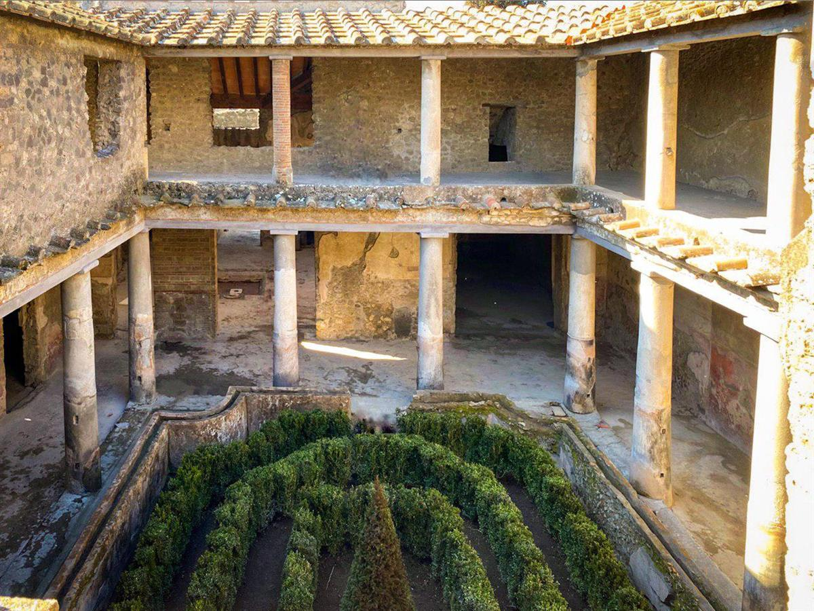
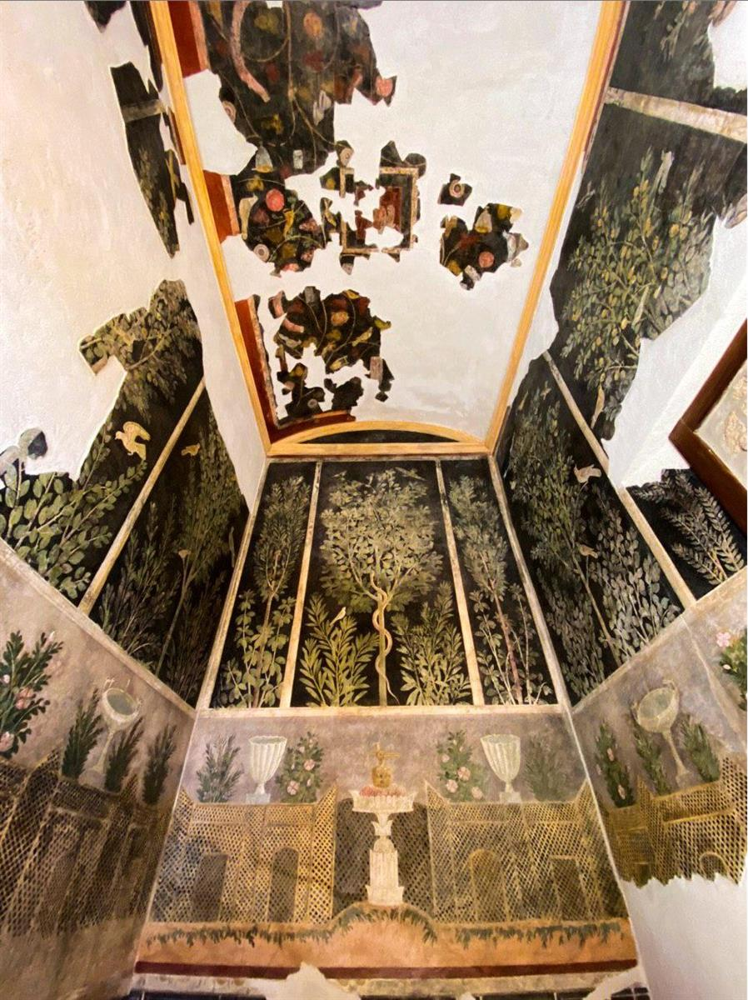
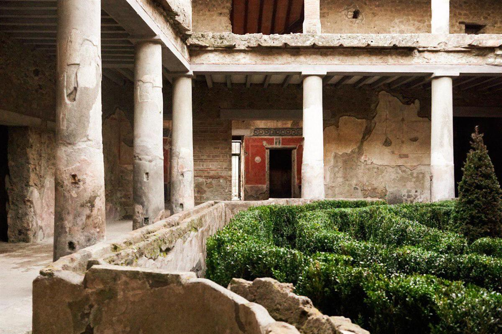
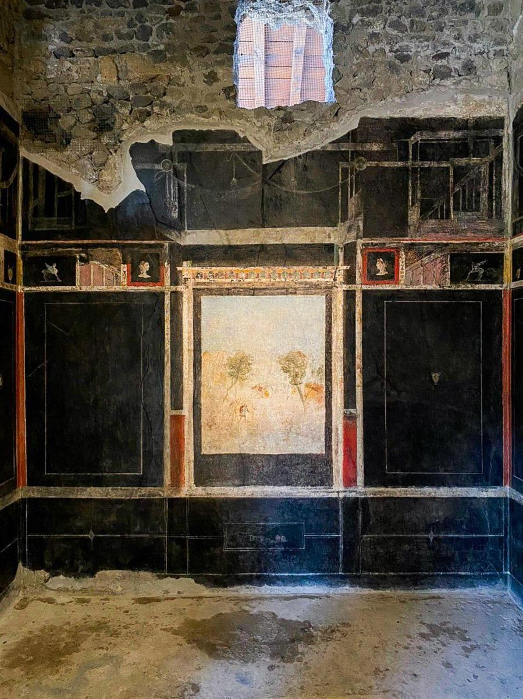
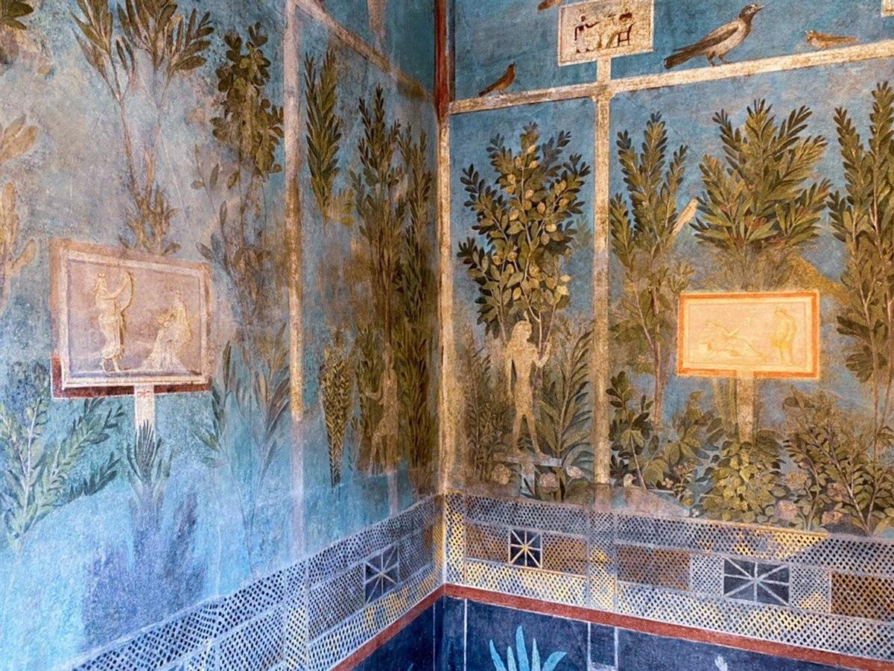
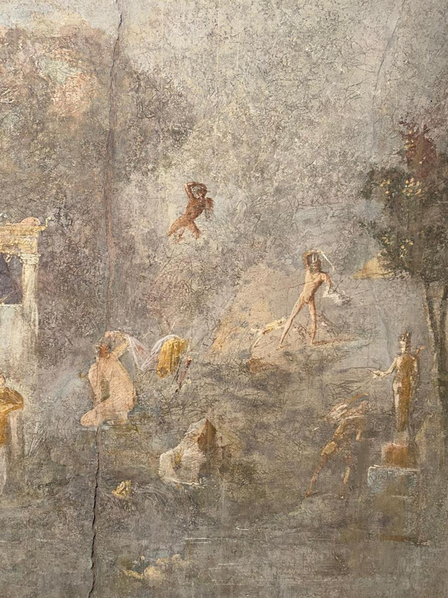
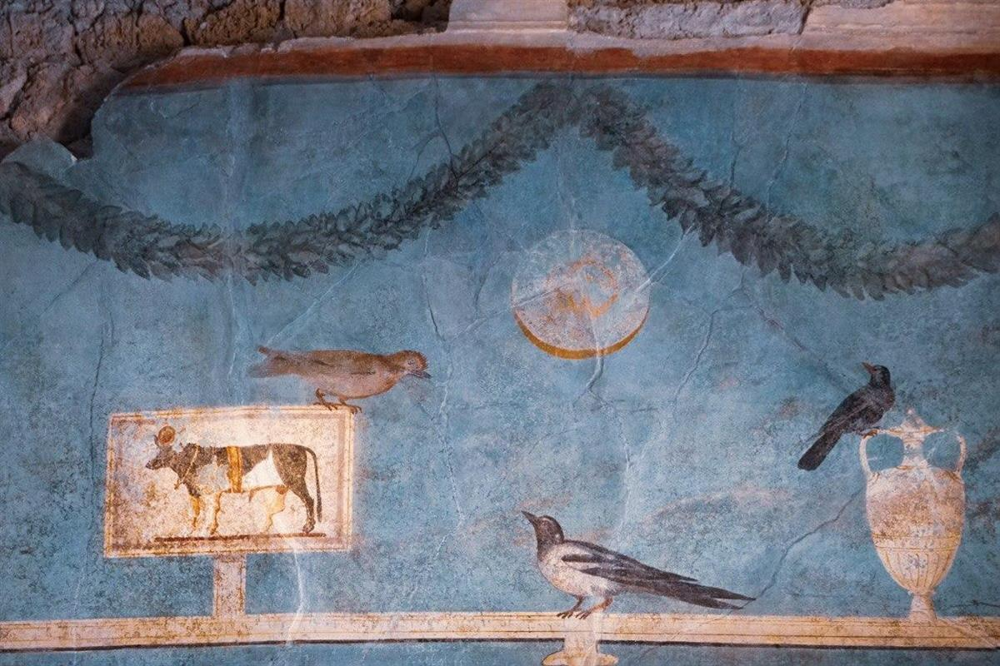
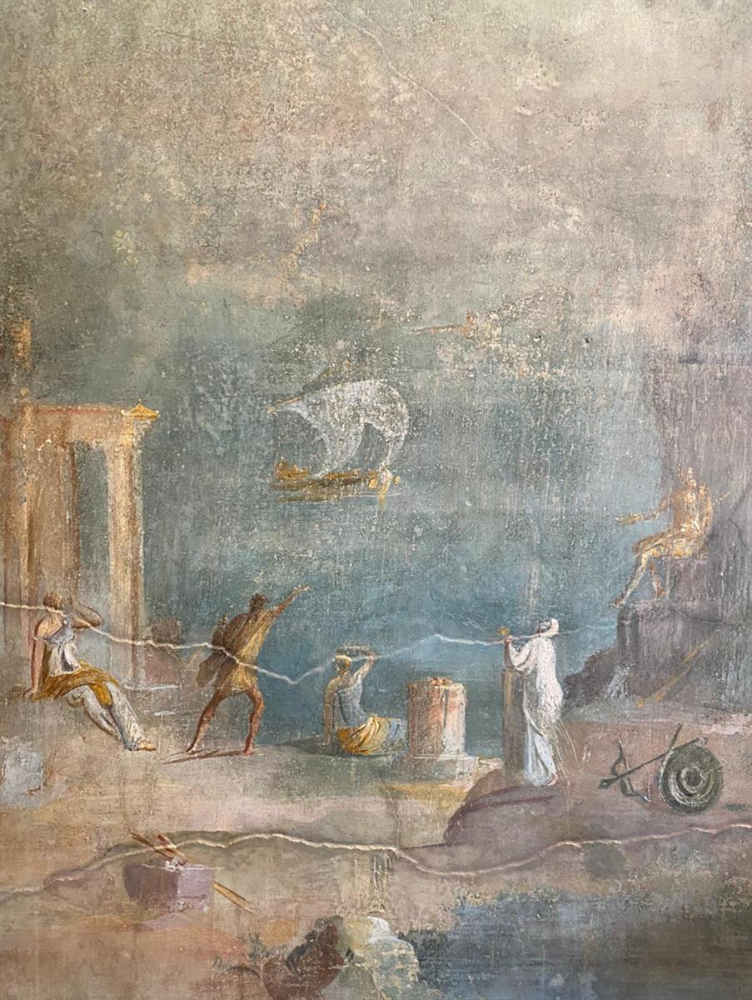
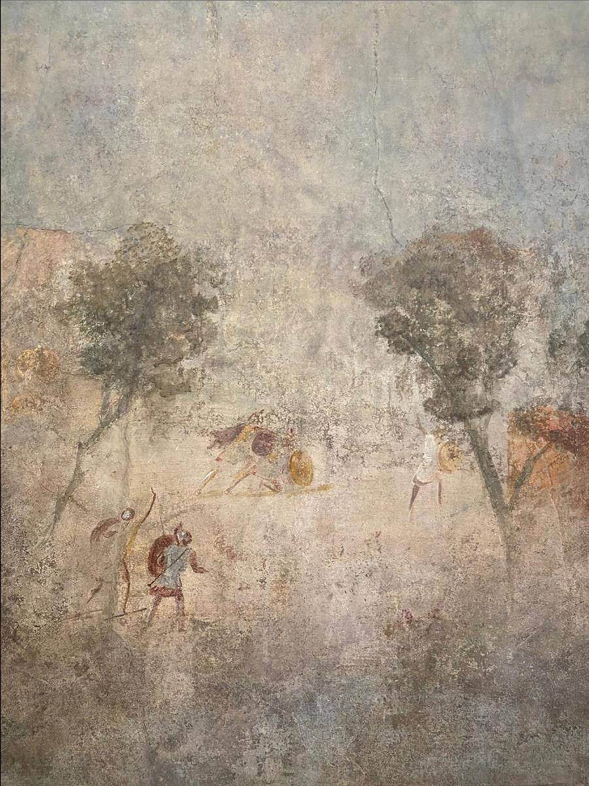

Massimo Osanna, director of the Pompeii Archaeological Park, at the unveiling of one of the painted houses at Pompeii. Courtesy of the Italian Ministry of Culture and Tourism.
Massimo Osanna, director of the Pompeii Archaeological Park, at the unveiling of one of the painted houses at Pompeii. Courtesy of the Italian Ministry of Culture and Tourism.
Three Enchantingly Painted Houses in the Lost City of Pompeii Are Finally Open to the Public After a 40-Year Restoration Project
A $113 million conservation effort rescued the ruins from, well, ruin.
Taylor Dafoe, February 19, 2020
The newly reopened buildings are the House of the Orchard, the House of Lovers, and the House of the Ship Europa. The best known of them, the House of Lovers, is named after a graffito scrawled above an interior fresco that reads Amantes, ut apes, vitam melitam exigunt, or “Lovers lead, like bees, a life as sweet as honey.” The building, which symbolized the lost city, was uncovered in 1933, but an earthquake in 1980 rendered it too dangerous to enter.
Three archaeological marvels at Pompeii, the ancient Roman city razed by the eruption of Mount Vesuvius in 79 AD, have reopened to the public following a 40-year conservation effort.
Calling it a “story of rebirth and redemption,” the Italian Ministry of Culture and Tourism unveiled a trio of newly restored buildings this week, each adorned with vibrant frescoes that provide fascinating insights into the daily lives of the ancient Romans.
The site is “a place where research and new archaeological excavations are back thanks to the long and silent work of the many professionals of cultural heritage that have contributed to the extraordinary results that are there for all to see,” said Dario Franceschini, Italy’s minister for cultural heritage and activities, in a statement. They are “a source of pride for Italy,” he added.

Courtesy of the Italian Ministry of Culture and Tourism.
The unveiling signaled the completion of the €105 million ($113 million) Great Pompeii Project, which the EU launched in 2014. Prior to that, rampant tourism, ecological disasters, and a lack of proper conservation resources had left the site in a state of ruin—even for a ruin. In 2010, less than 15 percent of Pompeii’s 110 acres, and just 10 of its 60-some buildings, were open to visitors, according to National Geographic.
Since the advent of the EU’s project, the status of the site has increased dramatically, and tourists have taken notice. The number of visitors to Pompeii annually has grown by 47 percent since 2014, topping at almost 4 million last year, according to The Sunday Times. Roughly 70 percent of the ancient city, including 30 buildings, is now accessible to the public.
Researchers are still working on the site, said Franceschini, and the state has allocated another €50 million ($54 million) to allow work to continue. “Pompeii will always require maintenance and research,” the minister added.

Courtesy of the Italian Ministry of Culture and Tourism.
The newly reopened buildings are the House of the Orchard, the House of Lovers, and the House of the Ship Europa. The best known of them, the House of Lovers, is named after a graffito scrawled above an interior fresco that reads Amantes, ut apes, vitam melitam exigunt, or “Lovers lead, like bees, a life as sweet as honey.” The building, which symbolized the lost city, was uncovered in 1933, but an earthquake in 1980 rendered it too dangerous to enter.
The House of the Orchard, which is covered in verdant frescoes of fruit trees and animals, was partially excavated in 1913 before being fully uncovered in 1951. The House of the Ship Europa was excavated over the course of more than two decades, from 1951 to 1975. A painting on the building depicts a large cargo ship called Europe, alongside other boats.
See more images of the newly restored buildings below.

Courtesy of the Italian Ministry of Culture and Tourism.

Courtesy of the Italian Ministry of Culture and Tourism.

Courtesy of the Italian Ministry of Culture and Tourism.

Courtesy of the Italian Ministry of Culture and Tourism.

Courtesy of the Italian Ministry of Culture and Tourism.
SOURCE: ARTNET NEWS
FURTHER READING: ITALIAN MINISTRY OF CULTURE AND TOURISM

